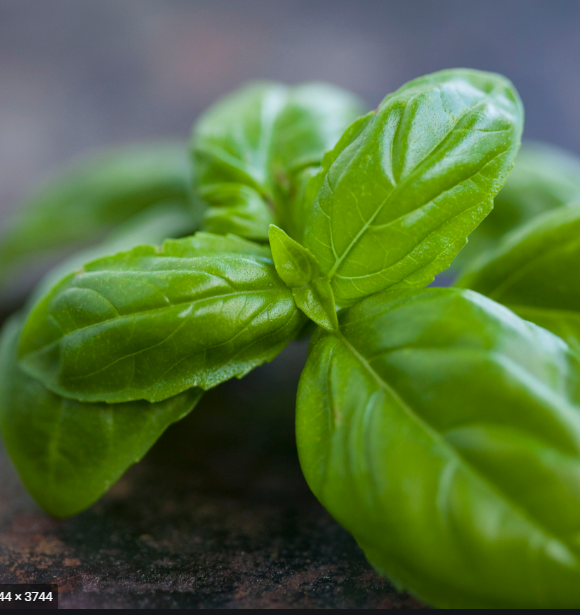

Parsley£3.00 It is one of the main ingredients used for Middle Eastern salads, it can also be used to make pesto conmining with basil, also it can be used to make fishcakes to give it a delightful taste. |
Coriander£3.00 Corriander is mostly famous for its fresh smell and lemony and bitter taste, it is used to make flavourful indian curries and it is also used for many health benefits. T |
Dill£3.00 Dill is an ellegant herbs which is Fresh and dried dill leaves, with their wonderfully aromatic smell, pair beautifully with seafood such as smoked salmon. The herb is also popular matched with potatoes and soups. |
Mint£3.00 Mint is really popular for refreshing humans organ, as it gives leasant spearmint flavour, which is mostly used to make Tea bags for herbal tea and other refreshing drinks. |

Basil£3.00 It is a really popular in UK, as it is most sold in UK, which is used for summer salads and mediterranean classic, providing a ellegant taste. |
Rosemary£3.00 It is used for roast meat like chicken or lamb, and can be used as flavouring for Yorkshire puddings, it gives extra kick to the meat making it smell fresh and taste fresh. |